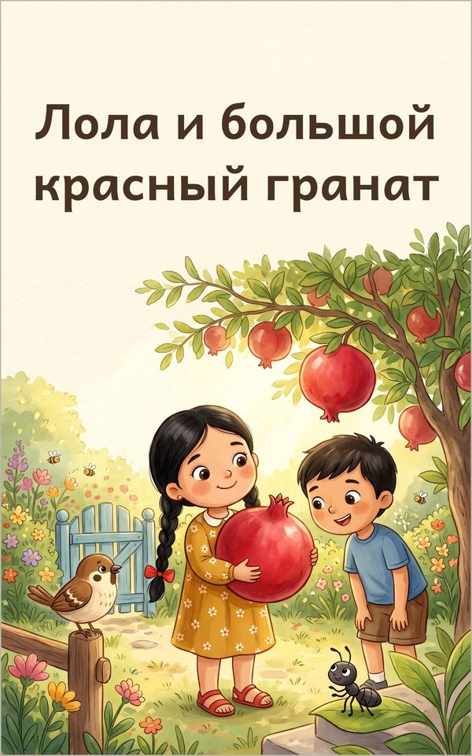

Лола и большой красный гранат
Тёплая сказка о том, как делиться, для детей 3–6 лет
Продажа электронной книги скоро откроется
Лола находит самый большой и самый красный гранат на свете и хочет оставить все блестящие зёрнышки себе. Но когда к ней по очереди приходят сосед, воробей и крошечный муравей, сладкое угощение вдруг перестаёт радовать. Мудрая бабушка помогает Лоле понять: вкусное становится ещё слаще, когда им делишься. Добрая книжка с картинками, ритмом, повторами и звукоподражаниями, чтобы читать вслух детям 3–6 лет.
Эта книга есть также на языках: English